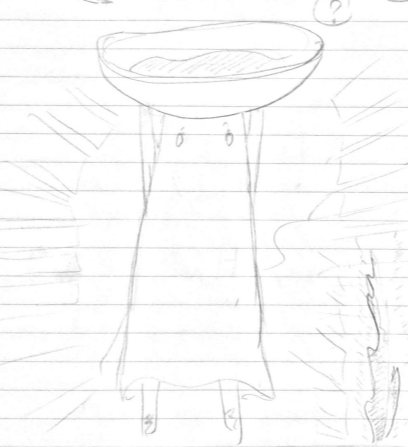

Concept
There are more than 1.2 billion people lacking access to clean drinking water in the world, but only a handful of organization and billionaire are looking to solve this problem. In order to inspire a solution to such a geographic-specific problem, there need a culture movement, and it must be artful first.
L’eau is an adventure game that tells the origin story of a water deity set in a fictional world where water is so rare, it is both a currency and a major spiritual concept.
By showing how the creature in this world can appreciate water capitally as well as spiritually, the game hope to inspire such level of appreciation within the player, especially the youth. For man must appreciate the simplest thing in life before he can cherish life to its fullest.
Target Audience
Journey is an indie video game developed by thatgamecompany and published by Sony Coputer Entertainment for the PlayStation 3. In Journey, the player controls a robed figure in a vast desert, traveling towards a mountain in the distance. Other players on the same journey can be discovered, and two players can meet and assist each other, but they cannot communicate via speech or text and cannot see each other’s names. It is listed as one of the greatest games of all time.
Those who enjoy Journey will find this game somewhat familiar. However, L’eau push the boundary of artful game further by introducing a more diverse range of culture as well as habitat. L’eau is more about exploration, building relationship, learning about the economy and enjoying the flow state rather than going toward an end goal.
Graphics
Player
These designs were inspired by an anime from Japan Anime Expo (Obake-chan), literally means ghost girl.
The main character can be described a sand dweller. To make it low-poly, this character must be simple in design.


Particle Effect
It is highly desired that the game can uttilize particle effect in an artful way, such that it shows the beauty night sky as well as the glowing life form on earth, for the gameplay is designed to happens mainly in the dark, and the morning event is mostly for minor conversation and quest taking!
One particular interesting particle effect is the bubbling of the water. For example, let’s say our ghost eventually acquired some magical power that allows her to control water bubble, and even travel, fly in it. That might be a very fun experience won’t it?
Gameplay
All in all, contents matter. The more content placed at the right place that pique the interest of player, then regardless of who the player is, they will always want to explore the world. As there is something to explore, not just a long walk toward the end, where they already expect the end goal.
In the past, human was not aware of the bidirectional thought (i.e, you can show them a goal with 2 consequences, and they wouldn’t want to guess it). But now in a world where entertainment is so popular, human has soon adapted such that they understand how to interpret the event and the goal and they know what final choice they will have eventually. There is no ending that is too foreign to our player. To patch this, some choose to mislead the player, some choose to have non-binary goal, some choose to do some novel thing, and some try a combination of stuffs.
The game is at heart an adventure, exploration game. There are several element that achieve this, and in order to avoid the dry feeling of repetitive that many adventure game does, which failed to capture the interest of the hyper audience we have today, there must be a combination of element within the adventure genre to craft a successful one. A plain one where player go from A to B will not work!
Traveling added with Spontaneous (with a chance of happening) events with funky random NPCs (that are contents which serve future purpose).
Background events, far away signal, the concept of using the environment as our HUD.
Actions with consequences and also lead the player toward foreign landmark.
Introducing out-of-norm culture and behaviors.
Objectives
To become a water deity, the player main job is of course to deliver water to those who are needing it.
There are several type of Objectives in the game:
Transporting water from place to place
Going to landmark to get water
Going back to where you was to give back the water
Either stay there for the fun, or return for the objectives.
The game demonstrate the traveler dilemma. Would you return to your home land to give them the water (albeit the travel back), or would you keep on exploring the world ahead?
This might sounds linear somewhat. We need a way to expand this such that the player doesn’t serve just a single village, but multiple of them.
The big question here is, given that the upcoming adventure will be mesmerizing and entertaining, will the player remember their original objective?
We must faintly make the original objective something the player might or might not remember.
The act of give and take creates an economy.
The act of asking to give and take creates generosity.
There will be some that you can give water to who do not request for it. Your job however, is to give them the water.
By promising bigger reward, and giving the player more visual entertainment, we can misled them into going with the flow and thus make them go forward, misguiding that this is an A to B game, but instead for any direction they go forward, they only experience part of the game.
The last economy?
How to show the player what they can possibly achieve?
There must be a way where player cross-path with their previous quest, where they would eventually learn that it would be too late to do so!
The player are guided and given multiple choice to deliver water across this world, but everytime they get the water, more promise of more water on the land ahead, and further greed.
The player must make their choice to return and florish their previous.
The timeline for this must be catered such that it will be a trade-off. All being in this world has a timespan in days to live.
The timespan must be designed such that they player can revisit them eventually.
Path crossing between quests.
There must be more than 3 ways of choosing choice. Right now I can think of three way the player are designed to play this game. Let’s say they need to deliver water from B to A, and they started at A.
Now, when they came to B, the people at B says that there is more water at C, and they only have some water left. The water left is enough for travel back to A and flourish A, if they choose to do so. Or they can use half the water to go toward C.
This is somewhat illogical. But somehow, it does serve a certain purpose. Now given that the player decided to go back to A and help A, what happens to B and C?
The B landmark must have more reasoning or something demanding such that they misled player to go toward C instead for the water for both A and B.
Player are tricked to Stack their quest.
How many landmark will we have? Let’s say we have 9 landmarks.
Each move has a consequence, similar to a peg game.
Eventually they will go toward the Tropical land, where water run amok.
When will they cross path with A again given they chose to abandon it? (To show them the consequence).
The landmark A must be somewhat simple, but something that can immediately aid players
On the way, player can give water to creature such that they will let player ride them for extra speed. There are two penalty when coming up with this:
* If player did not return to give the first Lama at A the water, then all Horse will have very low speed
* Or they will need to feed more water to the creature before they can ride them
Go to war for water?
Challenges
Choosing between goals and objectives and figuring out/remembering their benefit.
- As the story move on, there will be point where the player must choose between multiple objectives in order to maximize their current status and speed.
- L’eau adopts the newgame+ strategy to allow for near endless playing loop, letting user try different way of play without losing too much progress.
- Every events in the game cost a time unit, and the user consume the time unit by traveling or by sleeping over the time period.
- Managing time
Controls
Movement Analog
Rotation Analog or L/R triggers
Accept/Action button
Cancel/Drop button
Info button
Jump button
Rewards
Ability: + Animal rider (by feeding water to enough animal of a certain type) +
Events
Random Event Chance Increased
Story
Hidden routes
Point in relationship graphs
Water source and economy around the map
Technical
AI
The AI in the game serves mainly as a way to record pre-made play session, and replay it with new player. With this approach, the game can generate human-like AIs that does their job just like human. The way to do it is just record their input sequence and store it minimally per scene.
Conversation with NPC and other players
Player are able to strike a conversation with other if there is an indicator of willingness to have a conversation. This does not mimic the real world behavior of conversation in anyway, but it serves the purpose of the gameplay alright.
This consent method allowing player to chat with the other player as well.
Upon initiate a chat, if the other person is a real player, user will be able to initiate:
| Platform | Method of Communication |
|---|---|
| Mobile | Chat or voice |
| Console | Voice |
| PC | Chat or Voice |
The conversation will be a one-to-one instead of real-time communication. This allows the conversation to be comprehensible, and to force player to craft their message to deliver well.
I.e, with chat, once player A has sent a chat, she will need to wait for the other to reply before she can send them another chat.
There are other in-game method of communication that are more action-based.
I wonder about this chat system, as it complicates matter. What if we just let user interact and have them speak with each other through an emoji like system?
That way, the bubble will show only Emoji, and they can send the message whenever, just like in Journey.
The bigger conversation is for the NPC, and this still need some consideration. As an artful story must refrain from using more word than necessary, and instead let the art do its job.
Upgrades
L’eau upgrades portrait an economy of water exchange and how it works. These upgrades increase travel speed as well as stamina of the player. Mainly, these upgrades should be treated as helper instead. The game does not depend on these upgrades. These were introduced just for educational and relational purpose. A game without familiar element will seem foreign.
Basic upgrade
These upgrade dealt mainly with small amount of water. It is similar to a pointer in cookie clicker. Eventually, the player should be able to control an army of “ghost” that would carry water around the world. This is questionable, as we want to make this into an adventure/exploration game. Maybe the main character can spawn as he goes.
The update benefits mainly the controllable character. It does not influence the betterment of the economy.
Labor upgrade

These upgrade dealt with the volume of water player can hold while travel. The bucket evaporates, but is good when used within the tropical land.
Mechanic upgrade
These upgrade is approaching automation of water transportation. The improvement from labor is that it increase travel speed.
Facility upgrade
These upgrade automate the whole process of water transportation. There is environmental cost however.
HUD
Star constellation as Direction Compass
There are two way to implement this feature, one is to mimic the real world’s stars and constellation so it acts like a compass.
Another is to have the player a special character that can move the stars such that they forms human-readable guides and pointers.
A problem with this mechanic is that the player will have to wait until night fall for the compass to show up. This is not too terrible if the user can rest whenever they want and sleep until night to see the compass. This way, several gameplay mechanic and timer can utilize this mechanic to challenge the player in one way or another.
The passing of day and night quickly could become quite fun in many case.
There should be alternative method in the morning.
Adventure Game View

The view should be more focus on the adventure, landscape and so forth instead of the HUD itself. Thus blending the HUD into the environment might be a novel approach.
Sounds
Background Music
Inspiration:
- Music for 18 musicians <- Extremely good
World Design
These creatures adopt a diversity of fictional culture and clothing.
A world where personified creatures live in a desert-like, dry environments. This makes water source very far away from where they live. On the other hand, water remains crucial to life in this world. Its rareness made it a currency.
landmark, world, universe, level
A crappy map is derived just to inspire how this world might look like. It is more of an island-ish map. Some consideration and inspiration must be drawn from some survival game where their map looks very interesting. (And it seems to be procedurally generated too…)
Tropical
The people of this tropical tripe secure their border such that no creature in the desert are allowed to enter their sanctuary.
They entered an endless age of tropical beautifulness.
The player experience enlightenment, greenish feeling in this chapter. The world is green with water bubbling around. The creatures here have reason for why they afraid outsider would come over.
The wall was created
Party Dance
Parody Elements
We want to parody several real-life events and social elements. Including:
- Trump wall and the 1%
- Tinder swiping and social media usage
The parody should be artful, hidden-in-plain-sight kind of thing, or implemented straight in the way this world works.
Cost and time
Develop between technical and design will happens simultaneously. Each team can merge between milestone if the team or project exist.
Except technical milestone, all design-related milestones are listed based on their priority and should not be done one after another. They should be think of simultaneously such that each and every element blend with each other well.
The cost shall be calculated by multiplying the ETA with an hourly rate of $50 per hour.
Technical Milestones
Each of these technical milestone were designed such that they can be created as modularized hackathon projects. This allow for rapid development and constrained technical effort.
| No. | ETA | Description |
|---|---|---|
| 0 | 18 hours | Player explore a desert-like world, filled with stars, at night. The player avatar shines to lead the way. |
| 1 | 36 hours | Player stumble upon the first village, with 3 NPCs that can initiate a 2-lines comic conversation. The constellation in the sky guide the player toward the village. |
| 2 | 72 hours | A water economy, a quest system. Player travel toward a water landmark, get some water, and bring it back to the NPC. |
| 3 | 144 hours | Complete internal RPG point system, a relational graph, and random mechanic. |
Graphic Milestones
For the flexibility of human imagination and the way we seek knowledge around us, design milestone are no way “definite.” This milestone serves just to remind the designer how much out there to work on, and that each of the design can stop at the most basic if it’s stressing the designer, for from basic, man surely will think of it unconsciously. Prepared mind stumbled upon unconscious thought has the highest chance of producing innovation. I openly seek such dedication from my designer.
| No. | ETA | Description |
|---|---|---|
| 0 | 45 hours | Characters, Culture, Clothing |
| 1 | 45 hours | Color Palette, Landmark, World |
| 2 | 45 hours | NPCs, Objects, Items |
| 3 | 45 hours | Sceneries |
| 4 | 45 hours | HUD, Constellation |
Graphic Implementation Milestones
| No. | ETA | Description |
|---|---|---|
| 0 | 180 hours | Main Character |
| 1 | 180 hours | First Dessert Environment |
| 2 | 180 hours | First Object and Item |
| 3 | 90 hours | HUD, Constellation |
Game Design Milestones
| No. | ETA | Description |
|---|---|---|
| 0 | 45 hours | Gameplay, Economy, Emotion Flow |
| 1 | 45 hours | Character development |
| 2 | 45 hours | Story, NPC relationships |
| 3 | 45 hours | Level Design, Landmark origins |
| 4 | 45 hours | Constellation Origins, Trivias |
FAQ
L’eau?
It means water in French.
Tags
Logo
Gibberish for now.